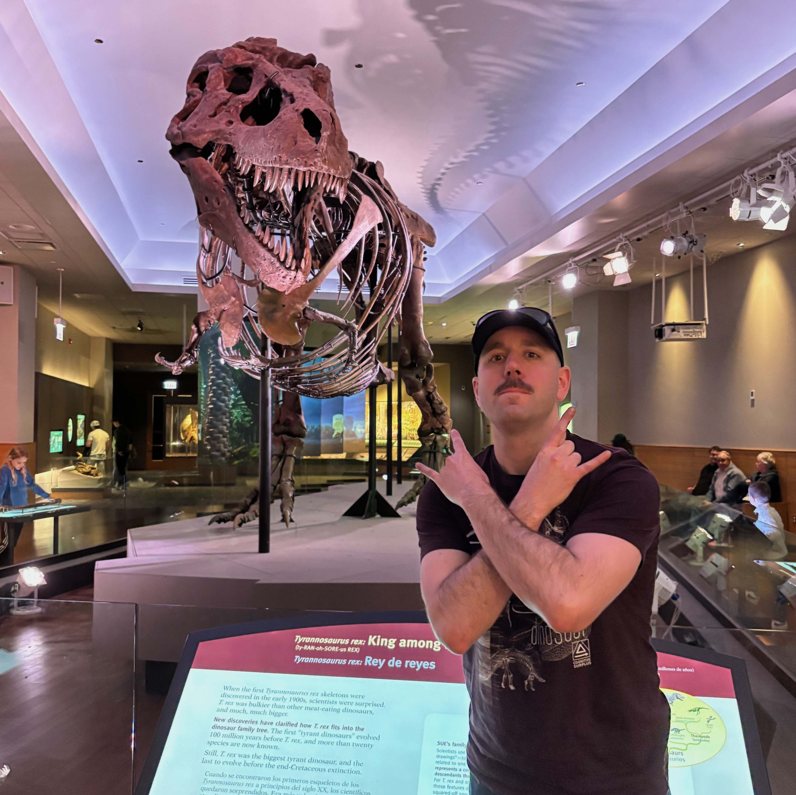
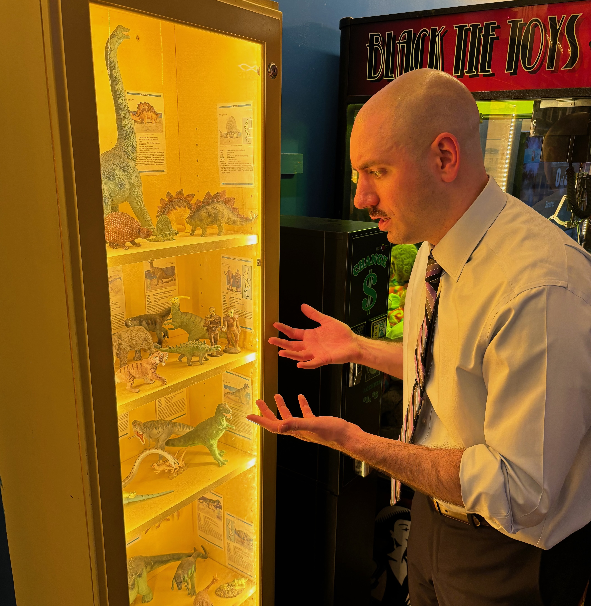
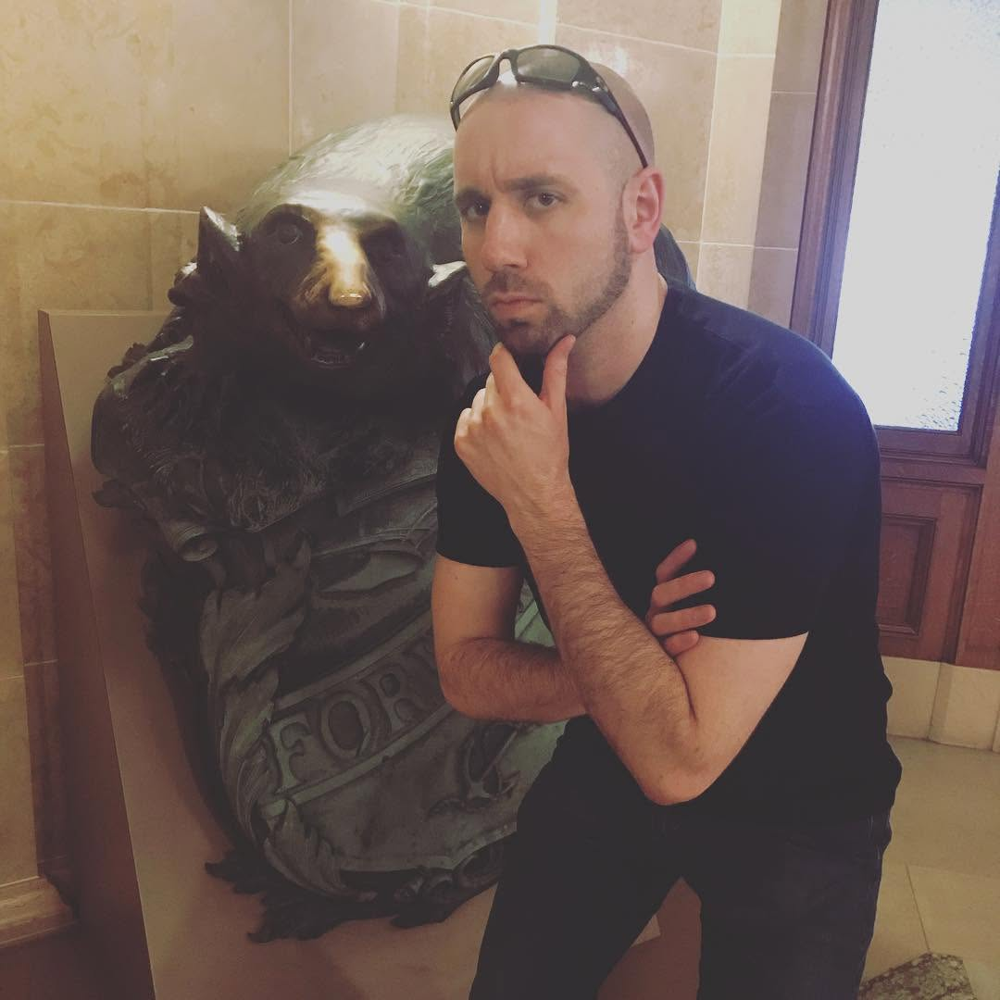

Intro
You found me! I'm a professional nerd who does web development. Keep scrolling to learn more about me, what makes me tick, and what I'm interested in!
Bio
I'm born and raised Des Moines, except for a brief detour to the faraway land of Indianola, Iowa! Quite the journey...
I grew up learning waaaay too much about dinosaurs, building Legos, and playing nerdy computer games. The only difference is now
I have to cover my own mortgage!
I spent a lot of my off-time from middle school and high school swimming competitively, and then lifeguarding in the summers.
Once I graduated I went to Simpson College
and got a double major in Math and Computer Science, where I learned a lot about embracing being myself, making lifelong friends, and
even took a quick trip to the UK and Ireland. Favorite spot on that trip was the Natural History Museum in London. Again, dinosaurs...
After graduating I started job hunting and watching The Wire while I worked on my resume, until I started working for a local
dev shop building web applications for local businesses. I do most of of my work using libraries and frameworks like
Ruby on Rails, Stimulus JS, jQuery, Bootstrap, and AWS for hosting. I've been there ever since and now live in Urbandale.



Some of the technologies I've worked with!
- Ruby on Rails
- Stimulus JS
- jQuery
- Bootstrap
- AWS
- PostgreSQL
- Docker
- And open to learning more!
Hobbies
When I'm not working, I can frequently be seen patroning local comic / board game shops, continuing to learn about dinosaurs, and
playing board games and video games like Pandemic, Arkham Horror, Wingspan, Elden Ring, and Cyberpunk 2077.
I recently got back into swimming for working out, in addition to the occasional stair stepper or weightlifting session. Got to do something
to keep up with days checking out new local breweries.
I've become a big reader in the last few years, mostly horror and sci-fi / fantasy, and I'm always on the lookout for a new local book
store to browse. Some recent favorite reads include Salem's Lot by Stephen King, Incidents Around The House by Josh Malerman, and the
the audiobooks of Dungeon Crawler Carl.